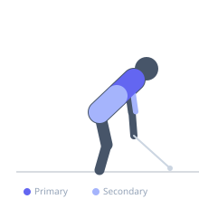
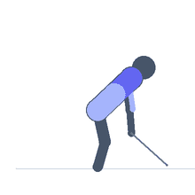

Exercise guide / Single-Arm Cable Row with Rotation
Single-Arm Cable Row with Rotation
The single-arm cable row with rotation adds a deliberate thoracic rotation to the standard seated cable row. As the elbow pulls back, the working side of the torso rotates to follow, increasing the range of lat contraction and recruiting the obliques and spinal rotators. This variation more closely mimics sporting actions such as throwing and rowing and develops rotational power alongside back strength.
Primary muscles
latissimus dorsi
rhomboid major
Secondary muscles
biceps brachii long head
internal oblique
external oblique
Stabilizers
erector spinae
transverse abdominis
Equipment
Cable Machine (Low Pulley)


Starting position
- Attach a single handle to a low cable pulley. Sit sideways or face the cable and grip the handle with one hand. The working arm should be fully extended toward the cable.
Setup
- The cable can be performed seated on a bench or standing. The seated variation provides better base stability for learning the movement.
Steps
- Step 1: Begin with the arm fully extended and the torso rotated slightly toward the cable.
- Step 2: Initiate the row by retracting the scapula and pulling the elbow back.
- Step 3: As the elbow passes the torso, allow the working-side shoulder to rotate back naturally.
- Step 4: At the end, the elbow is behind the torso and the working shoulder is rotated back fully.
- Step 5: Reverse the motion under control, allowing the torso to rotate forward as the arm extends.
Coaching cues
- Let your chest follow your elbow
- Rotate through the upper back, not the lower
- Full reach at the start, full retraction at the end
Breathing
- Exhale as you row and rotate, inhale as you return.
Range of motion
- Full arm extension with torso rotated forward at the start, arm fully rowed with torso rotated back at the finish.
Tempo
- 2-1-3-0
Common mistakes
- Rotating the hips instead of the thoracic spine
- Using momentum from the rotation rather than muscle contraction
- Not allowing enough rotation — treating it as a strict row
Safety
- Thoracic rotation is the target — lumbar rotation should be minimal
- If lumbar discomfort is felt, reduce the rotation range
Training
- strength: 8–12 reps
- hypertrophy: 12–15 reps
- strength: 3–4 sets
- hypertrophy: 3–4 sets
- Rest: {'strength': 90, 'hypertrophy': 75}